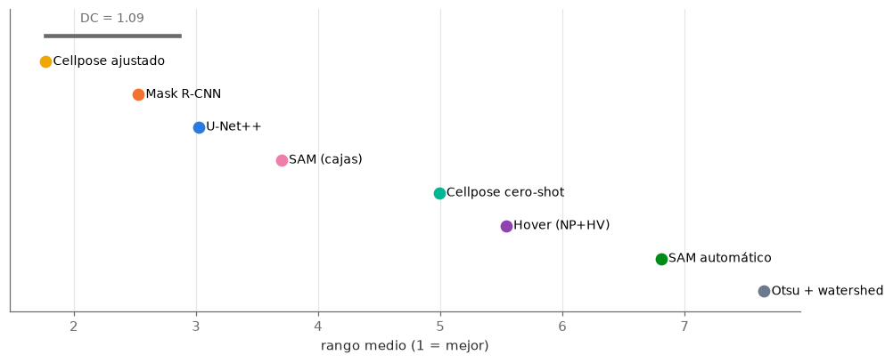
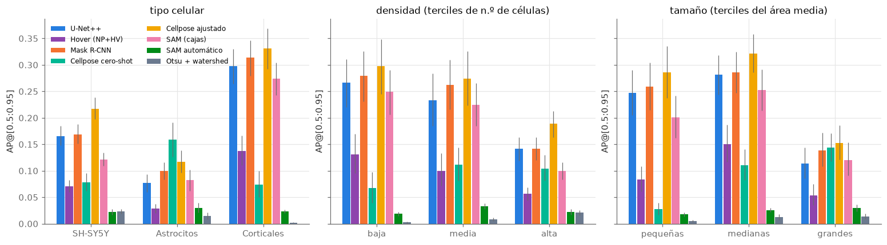
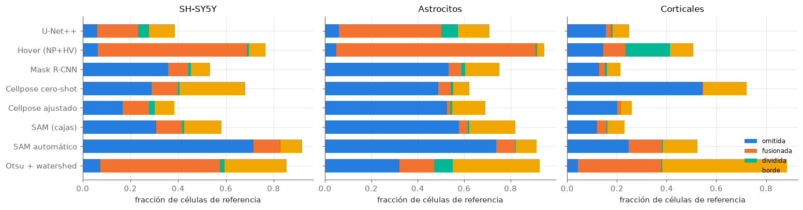
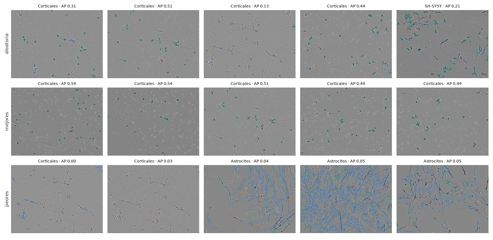

Resultados de segmentación#
En este capítulo comparamos los modelos en el conjunto de test (93 imágenes), que evaluamos una sola vez con el post-proceso congelado en validación. La unidad de análisis es la imagen: cada cifra es la media sobre imágenes de la media entre semillas, con su IC 95 % bootstrap (10 000 remuestreos de imágenes). Las pruebas siguen el plan del capítulo Declaración a priori. Los resultados los generan python scripts/eval_seg.py test y python scripts/analysis.py seg.
import numpy as np
import pandas as pd
import matplotlib.pyplot as plt
from IPython.display import Markdown, display
from project.book_utils import CAT, CELL_NAMES, MUTED, ci, need, style
style()
pd.set_option("display.precision", 3)
R = need("analysis/seg_stats/stats.pkl")
L = R["labels"]; models = R["models"]
COL = {m: CAT[i] for i, m in enumerate(["unetpp_main", "maskrcnn_main", "cellpose_zeroshot", "cellpose_finetune", "sam_box",
"sam_auto", "hover_main", "otsu_watershed"])}
Tabla principal#
S = R["summary"].loc[[m for m in models]]
tab = pd.DataFrame({
"modelo": [L[m] for m in S.index], "semillas": S.n_seeds.astype(int),
"AP@[0.5:0.95]": [ci(a, b, c) for a, b, c in zip(S.ap, S.ap_lo, S.ap_hi)],
"DE entre semillas": S.ap_seed_sd, "AP50": S.ap50, "AP75": S.ap75, "PQ": S.pq, "AJI": S.aji,
"F1 de instancia": S.inst_f1, "Dice": S.dice, "HD95 (px)": S.hd95, "F1 de borde": S.boundary_f1,
"error de conteo": S.count_error})
tab.sort_values("AP@[0.5:0.95]", ascending=False).style.hide(axis="index").format(precision=3, na_rep="—")
| modelo | semillas | AP@[0.5:0.95] | DE entre semillas | AP50 | AP75 | PQ | AJI | F1 de instancia | Dice | HD95 (px) | F1 de borde | error de conteo |
|---|---|---|---|---|---|---|---|---|---|---|---|---|
| Cellpose ajustado | 1 | 0.253 [0.226, 0.281] | — | 0.548 | 0.197 | 0.491 | 0.434 | 0.675 | 0.675 | 46.176 | 0.669 | -27.226 |
| Mask R-CNN | 3 | 0.228 [0.202, 0.254] | 0.004 | 0.488 | 0.182 | 0.453 | 0.402 | 0.622 | 0.639 | 45.920 | 0.633 | -36.563 |
| U-Net++ | 3 | 0.214 [0.188, 0.240] | 0.002 | 0.483 | 0.157 | 0.439 | 0.444 | 0.613 | 0.746 | 29.768 | 0.705 | -0.437 |
| SAM (cajas) | 1 | 0.191 [0.168, 0.216] | — | 0.454 | 0.131 | 0.413 | 0.378 | 0.587 | 0.626 | 45.467 | 0.605 | -36.312 |
| Hover (NP+HV) | 1 | 0.096 [0.079, 0.114] | — | 0.222 | 0.073 | 0.235 | 0.277 | 0.335 | 0.737 | 33.379 | 0.650 | -46.452 |
| Cellpose cero-shot | 1 | 0.094 [0.078, 0.111] | — | 0.224 | 0.070 | 0.233 | 0.211 | 0.334 | 0.423 | 93.789 | 0.387 | -14.215 |
| SAM automático | 1 | 0.025 [0.022, 0.028] | — | 0.056 | 0.019 | 0.073 | 0.125 | 0.105 | 0.276 | 95.596 | 0.279 | 74.935 |
| Otsu + watershed | 1 | 0.010 [0.008, 0.013] | — | 0.034 | 0.004 | 0.040 | 0.111 | 0.064 | 0.360 | 84.172 | 0.273 | 194.484 |
best = S.ap.idxmax(); second = S.ap.drop(best).idxmax()
display(Markdown(
f"El mejor modelo en test es **{L[best]}**, con AP@[0.5:0.95] = {ci(S.ap[best], S.ap_lo[best], S.ap_hi[best])}, seguido de "
f"**{L[second]}** con {ci(S.ap[second], S.ap_lo[second], S.ap_hi[second])}. "
+ (f"La DE entre semillas de {L[best]} es {S.ap_seed_sd[best]:.3f}, frente a una DE entre imágenes de {S.ap_image_sd[best]:.3f}"
+ (": la variación entre imágenes domina la incertidumbre del promedio." if S.ap_image_sd[best] > S.ap_seed_sd[best] else ".")
if S.n_seeds[best] > 1 else f"{L[best]} tiene una sola corrida (no depende de una semilla de entrenamiento); su DE entre imágenes es {S.ap_image_sd[best]:.3f}.")))
El mejor modelo en test es Cellpose ajustado, con AP@[0.5:0.95] = 0.253 [0.226, 0.281], seguido de Mask R-CNN con 0.228 [0.202, 0.254]. Cellpose ajustado tiene una sola corrida (no depende de una semilla de entrenamiento); su DE entre imágenes es 0.136.
El AP de Sartorius es exigente: promedia sobre umbrales de IoU hasta 0.95, donde casi ninguna célula de forma irregular alcanza el emparejamiento. Por eso AP50 y AP75 ayudan a leer la tabla: la caída de AP50 a AP75 mide cuánto del error es de contorno y no de detección.
Comparación estadística entre modelos#
C = R["comparisons"]
display(Markdown(f"Friedman sobre {C['n_units']} imágenes y {len(models)} modelos: χ² = {C['friedman_stat']:.1f}, "
f"p = {C['friedman_p']:.2g}. Diferencia crítica de Nemenyi (α = 0.05): {C['cd']:.2f} rangos."))
pw = C["pairwise"].copy()
pw["A"] = pw.A.map(L); pw["B"] = pw.B.map(L)
pw["diferencia [IC 95 %]"] = [ci(a, b, c) for a, b, c in zip(pw.mean_diff, pw.diff_lo, pw.diff_hi)]
pw[["A", "B", "diferencia [IC 95 %]", "cohen_dz", "cliffs_delta", "p_holm", "relevante"]].rename(
columns={"cohen_dz": "d de Cohen", "cliffs_delta": "δ de Cliff", "p_holm": "p (Holm)", "relevante": "significativa y ≥ 0.02"}
).style.hide(axis="index").format(precision=3)
Friedman sobre 93 imágenes y 8 modelos: χ² = 476.9, p = 7.5e-99. Diferencia crítica de Nemenyi (α = 0.05): 1.09 rangos.
| A | B | diferencia [IC 95 %] | d de Cohen | δ de Cliff | p (Holm) | significativa y ≥ 0.02 |
|---|---|---|---|---|---|---|
| U-Net++ | Hover (NP+HV) | 0.118 [0.100, 0.138] | 1.249 | 0.569 | 0.000 | True |
| U-Net++ | Mask R-CNN | -0.014 [-0.021, -0.007] | -0.385 | -0.065 | 0.006 | False |
| U-Net++ | Cellpose cero-shot | 0.120 [0.088, 0.152] | 0.760 | 0.559 | 0.000 | True |
| U-Net++ | Cellpose ajustado | -0.039 [-0.046, -0.032] | -1.156 | -0.169 | 0.000 | True |
| U-Net++ | SAM (cajas) | 0.022 [0.013, 0.032] | 0.466 | 0.105 | 0.000 | True |
| U-Net++ | SAM automático | 0.189 [0.164, 0.215] | 1.491 | 0.936 | 0.000 | True |
| U-Net++ | Otsu + watershed | 0.204 [0.177, 0.230] | 1.526 | 0.980 | 0.000 | True |
| Hover (NP+HV) | Mask R-CNN | -0.132 [-0.152, -0.113] | -1.372 | -0.635 | 0.000 | True |
| Hover (NP+HV) | Cellpose cero-shot | 0.001 [-0.019, 0.022] | 0.014 | 0.017 | 0.509 | False |
| Hover (NP+HV) | Cellpose ajustado | -0.158 [-0.179, -0.138] | -1.570 | -0.695 | 0.000 | True |
| Hover (NP+HV) | SAM (cajas) | -0.096 [-0.114, -0.078] | -1.098 | -0.515 | 0.000 | True |
| Hover (NP+HV) | SAM automático | 0.071 [0.054, 0.089] | 0.820 | 0.663 | 0.000 | True |
| Hover (NP+HV) | Otsu + watershed | 0.085 [0.068, 0.105] | 0.925 | 0.855 | 0.000 | True |
| Mask R-CNN | Cellpose cero-shot | 0.133 [0.102, 0.165] | 0.861 | 0.619 | 0.000 | True |
| Mask R-CNN | Cellpose ajustado | -0.026 [-0.034, -0.017] | -0.620 | -0.117 | 0.000 | True |
| Mask R-CNN | SAM (cajas) | 0.036 [0.029, 0.043] | 0.994 | 0.180 | 0.000 | True |
| Mask R-CNN | SAM automático | 0.203 [0.178, 0.229] | 1.588 | 0.975 | 0.000 | True |
| Mask R-CNN | Otsu + watershed | 0.217 [0.191, 0.245] | 1.606 | 0.993 | 0.000 | True |
| Cellpose cero-shot | Cellpose ajustado | -0.159 [-0.192, -0.127] | -0.998 | -0.686 | 0.000 | True |
| Cellpose cero-shot | SAM (cajas) | -0.097 [-0.127, -0.068] | -0.679 | -0.490 | 0.000 | True |
| Cellpose cero-shot | SAM automático | 0.070 [0.054, 0.086] | 0.898 | 0.517 | 0.000 | True |
| Cellpose cero-shot | Otsu + watershed | 0.084 [0.068, 0.101] | 1.037 | 0.686 | 0.000 | True |
| Cellpose ajustado | SAM (cajas) | 0.062 [0.050, 0.073] | 1.063 | 0.276 | 0.000 | True |
| Cellpose ajustado | SAM automático | 0.229 [0.202, 0.256] | 1.720 | 0.966 | 0.000 | True |
| Cellpose ajustado | Otsu + watershed | 0.243 [0.215, 0.271] | 1.747 | 0.976 | 0.000 | True |
| SAM (cajas) | SAM automático | 0.167 [0.144, 0.191] | 1.438 | 0.923 | 0.000 | True |
| SAM (cajas) | Otsu + watershed | 0.181 [0.157, 0.207] | 1.455 | 0.971 | 0.000 | True |
| SAM automático | Otsu + watershed | 0.014 [0.011, 0.017] | 0.896 | 0.588 | 0.000 | False |
ranks = C["mean_ranks"]
fig, ax = plt.subplots(figsize=(9, 1.6 + 0.25 * len(ranks)))
for k, (m, r) in enumerate(ranks.items()):
ax.plot(r, k, "o", color=COL.get(m, MUTED), ms=8)
ax.text(r + 0.06, k, L[m], va="center", fontsize=9)
lo = ranks.iloc[0]
ax.plot([lo, lo + C["cd"]], [-0.8, -0.8], color=MUTED, lw=3)
ax.text(lo + C["cd"] / 2, -1.2, f"DC = {C['cd']:.2f}", ha="center", color=MUTED, fontsize=9)
ax.set(xlabel="rango medio (1 = mejor)", yticks=[], ylim=(len(ranks) - 0.4, -1.6))
ax.grid(axis="y", visible=False)
plt.show()

En el diagrama de diferencia crítica, dos modelos cuyos rangos medios distan menos que la barra DC no se distinguen con la prueba de Nemenyi [Demšar, 2006]. La conclusión principal la tomamos de las pruebas de Wilcoxon–Holm de la tabla anterior, que son más potentes; el diagrama resume el orden.
mx = C.get("mixed", {})
if "params" in mx:
pv = pd.DataFrame({"coeficiente": mx["params"], "p": mx["pvalues"]}).drop(index=["Group Var"], errors="ignore")
display(pv)
icc = mx["group_var"] / (mx["group_var"] + mx["resid_var"])
# concordancia con las comparaciones pareadas: cada coeficiente es «modelo − referencia» (primer nivel alfabético)
pw = C["pairwise"]; coefs = {k[len("C(m)[T."):-1]: k for k in mx["params"].index if k.startswith("C(m)[T.")}
ref_m = sorted(set(pw.A) | set(pw.B))[0]; agree, n_cmp = 0, 0
for m_, k_ in coefs.items():
r_ = pw[((pw.A == m_) & (pw.B == ref_m)) | ((pw.A == ref_m) & (pw.B == m_))]
if len(r_):
d_ = r_.mean_diff.iloc[0] * (1 if r_.A.iloc[0] == m_ else -1)
n_cmp += 1
agree += int(np.sign(d_) == np.sign(mx["params"][k_]) and (r_.p_holm.iloc[0] < 0.05) == (mx["pvalues"][k_] < 0.05))
txt = (f"Modelo mixto `AP ~ modelo + (1 | sample_id)`: la varianza entre muestras es {mx['group_var']:.4f} y la residual "
f"{mx['resid_var']:.4f} (ICC = {icc:.2f}). Frente a {L.get(ref_m, ref_m)} como referencia, {agree} de {n_cmp} coeficientes "
"coinciden en signo y en significancia (α = 0.05) con la comparación pareada de Wilcoxon–Holm"
+ (": la correlación entre imágenes de una misma muestra no cambia las conclusiones." if agree == n_cmp else
"; las comparaciones discordantes deben leerse con cautela, porque la dependencia entre imágenes de una misma muestra "
"altera su significancia."))
display(Markdown(txt if mx.get("converged", True) else "El modelo mixto no convergió; lo reportamos sin interpretar sus coeficientes."))
else:
display(Markdown(f"El modelo mixto no se pudo ajustar: {mx.get('error')}."))
| coeficiente | p | |
|---|---|---|
| Intercept | -1.049e-16 | 1.000e+00 |
| C(m)[T.cellpose_zeroshot] | -1.591e-01 | 1.177e-47 |
| C(m)[T.hover_main] | -1.577e-01 | 8.194e-47 |
| C(m)[T.maskrcnn_main] | -2.572e-02 | 1.907e-02 |
| C(m)[T.otsu_watershed] | -2.430e-01 | 1.194e-108 |
| C(m)[T.sam_auto] | -2.288e-01 | 1.503e-96 |
| C(m)[T.sam_box] | -6.193e-02 | 1.666e-08 |
| C(m)[T.unetpp_main] | -3.949e-02 | 3.201e-04 |
Modelo mixto AP ~ modelo + (1 | sample_id): la varianza entre muestras es 0.0000 y la residual 0.0056 (ICC = 0.00). Frente a Cellpose ajustado como referencia, 7 de 7 coeficientes coinciden en signo y en significancia (α = 0.05) con la comparación pareada de Wilcoxon–Holm: la correlación entre imágenes de una misma muestra no cambia las conclusiones.
RQ1 y H3: estratificación por tipo celular, densidad y tamaño#
st_ = R["stratified"]
fig, axes = plt.subplots(1, 3, figsize=(14, 3.8), sharey=True)
for ax, col, order in zip(axes, ("cell_type", "densidad", "tamaño"),
(["shsy5y", "astro", "cort"], ["baja", "media", "alta"], ["pequeñas", "medianas", "grandes"])):
t = st_[col]
w = 0.8 / len(models)
for k, m in enumerate(models):
g = t[t.model == m].set_index("nivel").reindex(order)
x = np.arange(len(order)) + (k - len(models) / 2 + 0.5) * w
ax.bar(x, g.ap, w * 0.9, color=COL.get(m, MUTED), label=L[m])
ax.errorbar(x, g.ap, yerr=[g.ap - g.lo, g.hi - g.ap], fmt="none", ecolor=MUTED, lw=0.8)
ax.set_xticks(range(len(order)), [CELL_NAMES.get(o, o) for o in order])
ax.set(title={"cell_type": "tipo celular", "densidad": "densidad (terciles de n.º de células)",
"tamaño": "tamaño (terciles del área media)"}[col], ylabel="AP@[0.5:0.95]")
axes[0].legend(fontsize=8, ncol=2)
plt.show()

h3 = st_["h3"]
orders = pd.DataFrame({CELL_NAMES[k]: [L[m] for m in v] for k, v in h3["orders"].items()}, index=range(1, len(models) + 1))
orders.index.name = "puesto"
display(orders)
ip = {k: v for k, v in h3["interaction_pvalues"].items()} if "error" not in h3["interaction_pvalues"] else {}
display(Markdown(
f"**H3** {'se refuta' if h3['identical'] else 'no se refuta'}: el orden de los modelos "
f"{'es idéntico' if h3['identical'] else 'cambia'} entre los tres tipos celulares (W de Kendall = {h3['kendall_w']:.2f}, "
f"donde 1 indica órdenes idénticos). "
+ (f"En el modelo mixto con interacción modelo × tipo, {sum(p < 0.05 for p in ip.values())} de {len(ip)} términos de interacción "
f"tienen p < 0.05." if ip else "")))
| Astrocitos | Corticales | SH-SY5Y | |
|---|---|---|---|
| puesto | |||
| 1 | Cellpose cero-shot | Cellpose ajustado | Cellpose ajustado |
| 2 | Cellpose ajustado | Mask R-CNN | Mask R-CNN |
| 3 | Mask R-CNN | U-Net++ | U-Net++ |
| 4 | SAM (cajas) | SAM (cajas) | SAM (cajas) |
| 5 | U-Net++ | Hover (NP+HV) | Cellpose cero-shot |
| 6 | SAM automático | Cellpose cero-shot | Hover (NP+HV) |
| 7 | Hover (NP+HV) | SAM automático | Otsu + watershed |
| 8 | Otsu + watershed | Otsu + watershed | SAM automático |
H3 no se refuta: el orden de los modelos cambia entre los tres tipos celulares (W de Kendall = 0.82, donde 1 indica órdenes idénticos). En el modelo mixto con interacción modelo × tipo, 9 de 14 términos de interacción tienen p < 0.05.
RQ3 y H2: métricas de píxel frente a métricas de instancia#
h2 = R["h2"]
m2 = h2["means"].rename(index=L)[["ap", "dice", "auc_roc", "balanced_accuracy"]]
m2.columns = ["AP", "Dice", "AUC-ROC de píxel", "balanced accuracy de píxel"]
display(m2.sort_values("AP", ascending=False))
rho, p = h2["spearman_auc"] if h2["spearman_auc"] else (np.nan, np.nan)
display(Markdown(
f"Con {h2['n_models']} modelos con mapa de probabilidad, el AUC-ROC de píxel supera 0.95 en todos: "
f"**{'sí' if h2['saturated']['auc_roc'] else 'no'}**; la *balanced accuracy* de píxel supera 0.95 en todos: "
f"**{'sí' if h2['saturated']['balanced_accuracy'] else 'no'}**. La correlación de Spearman entre el orden por AUC-ROC y el orden "
f"por AP es ρ = {rho:.2f} (p = {p:.2f}). **H2 {'se refuta' if h2['refuted'] else 'no se refuta'}** con el criterio pre-registrado "
f"(ρ > 0.9). Con tan pocos modelos la correlación tiene poca potencia, como declaramos en el pre-registro."))
if not (h2["saturated"]["auc_roc"] and h2["saturated"]["balanced_accuracy"]):
display(Markdown(
"La premisa descriptiva de H2 no se cumple: las métricas de píxel van de "
f"{m2['AUC-ROC de píxel'].min():.3f} a {m2['AUC-ROC de píxel'].max():.3f} (AUC-ROC) y de "
f"{m2['balanced accuracy de píxel'].min():.3f} a {m2['balanced accuracy de píxel'].max():.3f} (*balanced accuracy*), así que no "
"están saturadas. El criterio de refutación pre-registrado solo evalúa la segunda parte (si el orden por AUC-ROC reproduce "
"el orden por AP), de modo que el veredicto se refiere a esa parte: las métricas de píxel separan a los modelos, pero no "
"en el mismo orden que el AP."))
ct = h2["contradictions"].copy(); ct["A"] = ct.A.map(L); ct["B"] = ct.B.map(L)
ct.rename(columns={"frac_contradice": "imágenes en que Dice y AP ordenan al revés"}).style.hide(axis="index").format(precision=2)
| AP | Dice | AUC-ROC de píxel | balanced accuracy de píxel | |
|---|---|---|---|---|
| model | ||||
| Cellpose ajustado | 0.253 | 0.675 | 0.980 | 0.801 |
| Mask R-CNN | 0.228 | 0.639 | 0.945 | 0.798 |
| U-Net++ | 0.214 | 0.746 | 0.976 | 0.860 |
| SAM (cajas) | 0.191 | 0.626 | 0.824 | 0.799 |
| Hover (NP+HV) | 0.096 | 0.737 | 0.974 | 0.849 |
| Cellpose cero-shot | 0.094 | 0.423 | 0.839 | 0.712 |
| SAM automático | 0.025 | 0.276 | 0.746 | 0.669 |
Con 7 modelos con mapa de probabilidad, el AUC-ROC de píxel supera 0.95 en todos: no; la balanced accuracy de píxel supera 0.95 en todos: no. La correlación de Spearman entre el orden por AUC-ROC y el orden por AP es ρ = 0.75 (p = 0.05). H2 no se refuta con el criterio pre-registrado (ρ > 0.9). Con tan pocos modelos la correlación tiene poca potencia, como declaramos en el pre-registro.
La premisa descriptiva de H2 no se cumple: las métricas de píxel van de 0.746 a 0.980 (AUC-ROC) y de 0.669 a 0.860 (balanced accuracy), así que no están saturadas. El criterio de refutación pre-registrado solo evalúa la segunda parte (si el orden por AUC-ROC reproduce el orden por AP), de modo que el veredicto se refiere a esa parte: las métricas de píxel separan a los modelos, pero no en el mismo orden que el AP.
| A | B | imágenes en que Dice y AP ordenan al revés |
|---|---|---|
| Cellpose ajustado | Cellpose cero-shot | 0.06 |
| Cellpose ajustado | Hover (NP+HV) | 0.53 |
| Cellpose ajustado | Mask R-CNN | 0.19 |
| Cellpose ajustado | SAM automático | 0.01 |
| Cellpose ajustado | SAM (cajas) | 0.23 |
| Cellpose ajustado | U-Net++ | 0.56 |
| Cellpose cero-shot | Hover (NP+HV) | 0.42 |
| Cellpose cero-shot | Mask R-CNN | 0.06 |
| Cellpose cero-shot | SAM automático | 0.17 |
| Cellpose cero-shot | SAM (cajas) | 0.05 |
| Cellpose cero-shot | U-Net++ | 0.24 |
| Hover (NP+HV) | Mask R-CNN | 0.72 |
| Hover (NP+HV) | SAM automático | 0.14 |
| Hover (NP+HV) | SAM (cajas) | 0.70 |
| Hover (NP+HV) | U-Net++ | 0.35 |
| Mask R-CNN | SAM automático | 0.01 |
| Mask R-CNN | SAM (cajas) | 0.28 |
| Mask R-CNN | U-Net++ | 0.46 |
| SAM automático | SAM (cajas) | 0.02 |
| SAM automático | U-Net++ | 0.01 |
| SAM (cajas) | U-Net++ | 0.20 |
Dice y AP se contradicen cuando un modelo cubre bien el primer plano pero fusiona o fragmenta células: el Dice de píxel no ve la frontera entre dos células vecinas, y el AP la penaliza dos veces (un falso positivo y dos falsos negativos por cada fusión). La taxonomía de errores de la sección siguiente cuantifica ese mecanismo.
Taxonomía de errores#
Clasificamos automáticamente cada célula no emparejada (IoU ≤ 0.5) con reglas fijadas antes de ver test (metrics_seg.error_taxonomy): fusionada si una predicción cubre al menos la mitad de ella y de otra célula; dividida si dos o más predicciones la cubren por partes; borde si su mejor IoU está entre 0.1 y 0.5; omitida en otro caso. Una predicción sin célula (IoU < 0.1 con todas) es falsa.
tx = R["taxonomy"].copy()
fr = tx.set_index(["model", "cell_type"])[["frac_omitida", "frac_fusionada", "frac_dividida", "frac_borde"]]
fig, axes = plt.subplots(1, 3, figsize=(14, 3.6), sharey=True)
names = {"frac_omitida": "omitida", "frac_fusionada": "fusionada", "frac_dividida": "dividida", "frac_borde": "borde"}
for ax, t in zip(axes, ["shsy5y", "astro", "cort"]):
d = fr.xs(t, level="cell_type").reindex(models)
left = np.zeros(len(d))
for k, c in enumerate(d.columns):
ax.barh([L[m] for m in d.index], d[c], left=left, color=CAT[k], label=names[c], height=0.7)
left += d[c].to_numpy()
ax.set(title=CELL_NAMES[t], xlabel="fracción de células de referencia")
axes[0].invert_yaxis(); axes[-1].legend(loc="lower right", fontsize=8)
plt.show()

fp = tx.groupby("model")[["err_falsa", "n_gt"]].sum()
fp = (fp.err_falsa / fp.n_gt).rename(index=L).sort_values()
display(Markdown("Predicciones falsas por célula de referencia (todas las imágenes): "
+ "; ".join(f"{k}: {v:.2f}" for k, v in fp.items()) + "."))
Predicciones falsas por célula de referencia (todas las imágenes): Cellpose ajustado: 0.03; Mask R-CNN: 0.06; SAM (cajas): 0.06; Hover (NP+HV): 0.07; U-Net++: 0.14; Cellpose cero-shot: 0.27; SAM automático: 1.43; Otsu + watershed: 2.19.
H1: preentrenamiento y fracción de datos#
h1 = R["h1"]
rows = [dict(fracción=k, **{"Mask R-CNN − U-Net++ [IC 95 %]": ci(v["diff"], v["lo"], v["hi"]), "p (Wilcoxon)": v["p"],
"imágenes": v["n"], "semillas (Mask R-CNN, U-Net++)": v["seeds"]})
for k, v in h1.items() if isinstance(v, dict)]
display(pd.DataFrame(rows))
if "parte1_refutada" in h1:
display(Markdown(
f"**H1, primera parte {'se refuta' if h1['parte1_refutada'] else 'no se refuta'}**: al 25 % del entrenamiento el IC de la "
f"diferencia Mask R-CNN − U-Net++ "
+ ("queda entero por debajo de 0: la U-Net++ desde cero supera a Mask R-CNN preentrenado, el sentido contrario al de la "
"hipótesis. "
if h1.get("parte1_sentido_contrario") else
("incluye el 0. " if h1["parte1_refutada"] else "queda entero por encima de 0. "))
+ (f"**Segunda parte {'se refuta' if h1['parte2_refutada'] else 'no se refuta'}**: la diferencia al 100 % "
f"{'no es menor' if h1['parte2_refutada'] else 'es menor'} que al 25 %." if "parte2_refutada" in h1 else "")))
_s25 = h1["25 %"]["seeds"]
if min(_s25) < 3:
display(Markdown(
f"El contraste al 25 % usa {_s25[0]} semilla{'s' if _s25[0] != 1 else ''} de Mask R-CNN y {_s25[1]} de U-Net++. La prueba "
"pre-registrada es pareada por imagen, así que su IC recoge la variación entre imágenes de test pero no la variación entre "
"entrenamientos: el veredicto vale para "
+ ("esa semilla" if max(_s25) == 1 else "esas semillas")
+ ". Como referencia de cuánto puede mover la diferencia otra semilla, la DE entre semillas del AP en los modelos completos es "
+ " y ".join(f"{S.ap_seed_sd[m]:.3f} en {L[m]}" for m in ("maskrcnn_main", "unetpp_main")
if m in S.index and np.isfinite(S.ap_seed_sd[m]))
+ " (tabla principal)."))
# presupuesto de optimización de cada corrida: pasos de gradiente hasta el final y hasta la mejor época
from project.config import RESULTS as _R
from project.persist import load_pickle as _lp
def _budget(run):
d = _R / "seg" / run / "seed_00"
if not (d / "history.pkl").exists():
return None
c = _lp(d / "config.pkl"); cfg = c.get("config", c)
hist = pd.DataFrame(_lp(d / "history.pkl"))
if "steps_per_epoch" in cfg:
per = int(cfg["steps_per_epoch"]); unit = f"{per} pasos fijos de lotes de recortes por época"
else:
per = int(np.ceil(len(c["train_ids"]) / cfg.get("batch", 2))); unit = f"{len(c['train_ids'])} imágenes en lotes de {cfg.get('batch', 2)}"
best = int(hist.val_loss.idxmin()) + 1
return dict(epochs=len(hist), best=best, steps=len(hist) * per, steps_best=best * per, unit=unit)
_b = {r: _budget(r) for r in ("maskrcnn_frac25", "unetpp_frac25", "maskrcnn_main", "unetpp_main")}
if all(_b.values()):
_rm = _b["maskrcnn_frac25"]["steps_best"] / _b["maskrcnn_main"]["steps_best"]
_ru = _b["unetpp_frac25"]["steps_best"] / _b["unetpp_main"]["steps_best"]
display(pd.DataFrame({r: {"épocas": v["epochs"], "mejor época": v["best"], "pasos de gradiente": v["steps"],
"pasos hasta la mejor época": v["steps_best"], "unidad de época": v["unit"]}
for r, v in _b.items()}).T.rename(index={"maskrcnn_frac25": "Mask R-CNN (25 %)", "unetpp_frac25": "U-Net++ (25 %)",
"maskrcnn_main": "Mask R-CNN (100 %)", "unetpp_main": "U-Net++ (100 %)"}))
display(Markdown(
"**Condición de validez del contraste al 25 %.** Las dos familias no reducen igual su presupuesto de optimización al "
f"reducir los datos. La época de Mask R-CNN recorre todas las imágenes de entrenamiento, así que al 25 % cada época "
"tiene la cuarta parte de pasos y la parada temprana actúa antes: el modelo elegido vio "
f"{100 * _rm:.0f} % de los pasos de gradiente que el de 100 %. La U-Net++ tiene 100 pasos fijos por época y al 25 % vio "
f"{100 * _ru:.0f} % de los pasos del modelo completo, repitiendo más veces cada imagen. El contraste pre-registrado mide, "
"por tanto, «preentrenamiento con la regla de parada de cada familia» y no solo el efecto del preentrenamiento: con el "
"mismo número de pasos, la brecha al 25 % podría ser menor. El veredicto vale para el protocolo de entrenamiento "
"descrito en el capítulo {doc}`12_seg_modelos`."))
else:
display(Markdown("Las corridas al 25 % no terminaron dentro del presupuesto; H1 queda sin contrastar."))
| fracción | Mask R-CNN − U-Net++ [IC 95 %] | p (Wilcoxon) | imágenes | semillas (Mask R-CNN, U-Net++) | |
|---|---|---|---|---|---|
| 0 | 25 % | -0.091 [-0.105, -0.078] | 2.157e-16 | 93 | (1, 1) |
| 1 | 100 % | 0.014 [0.007, 0.021] | 3.002e-03 | 93 | (3, 3) |
H1, primera parte se refuta: al 25 % del entrenamiento el IC de la diferencia Mask R-CNN − U-Net++ queda entero por debajo de 0: la U-Net++ desde cero supera a Mask R-CNN preentrenado, el sentido contrario al de la hipótesis. Segunda parte se refuta: la diferencia al 100 % no es menor que al 25 %.
El contraste al 25 % usa 1 semilla de Mask R-CNN y 1 de U-Net++. La prueba pre-registrada es pareada por imagen, así que su IC recoge la variación entre imágenes de test pero no la variación entre entrenamientos: el veredicto vale para esa semilla. Como referencia de cuánto puede mover la diferencia otra semilla, la DE entre semillas del AP en los modelos completos es 0.004 en Mask R-CNN y 0.002 en U-Net++ (tabla principal).
| épocas | mejor época | pasos de gradiente | pasos hasta la mejor época | unidad de época | |
|---|---|---|---|---|---|
| Mask R-CNN (25 %) | 10 | 5 | 540 | 270 | 107 imágenes en lotes de 2 |
| U-Net++ (25 %) | 35 | 34 | 3500 | 3400 | 100 pasos fijos de lotes de recortes por época |
| Mask R-CNN (100 %) | 24 | 20 | 5064 | 4220 | 421 imágenes en lotes de 2 |
| U-Net++ (100 %) | 35 | 28 | 3500 | 2800 | 100 pasos fijos de lotes de recortes por época |
Condición de validez del contraste al 25 %. Las dos familias no reducen igual su presupuesto de optimización al reducir los datos. La época de Mask R-CNN recorre todas las imágenes de entrenamiento, así que al 25 % cada época tiene la cuarta parte de pasos y la parada temprana actúa antes: el modelo elegido vio 6 % de los pasos de gradiente que el de 100 %. La U-Net++ tiene 100 pasos fijos por época y al 25 % vio 121 % de los pasos del modelo completo, repitiendo más veces cada imagen. El contraste pre-registrado mide, por tanto, «preentrenamiento con la regla de parada de cada familia» y no solo el efecto del preentrenamiento: con el mismo número de pasos, la brecha al 25 % podría ser menor. El veredicto vale para el protocolo de entrenamiento descrito en el capítulo Modelos de segmentación.
Casos cualitativos#
La Figura 7 muestra, para el mejor modelo, una muestra aleatoria de imágenes de test elegida con semilla fija y los peores casos por AP. Los genera python scripts/figs_results_seg.py.


Figura 7 Predicciones del mejor modelo en test: muestra aleatoria (semilla 2026), cinco mejores y cinco peores imágenes por AP. Verde: células emparejadas (IoU > 0.5); naranja: predicciones falsas o con IoU insuficiente; azul: células de referencia omitidas. Imágenes de Sartorius [Sartorius, 2021]; figura elaborada por los autores.#